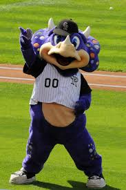

The Colorado Rockies were founded by John Antonucci in 1991. Although founded in 1991 the team didn't start playing until 1993.
The Colorado Rockies have made 5 playoff appearances in their 32 years as a franchise. They first made it to the playoffs in 1995 but lost in the NLDS in a 3-1 series. In 2007 they made it back to the playoffs, won the NL pennant but fell short, losing the world series to the Red Sox. In 2009 they lost in the NLDS to the Phillies. In 2017 they lost in the wild card to Arizona Diamondbacks. Finally, in 2018 the Rockies won the wild card but lost to the Brewers in the NLDS. In Summary, they made it to the playoffs 5 times, won the NL Pennant, made it to the world series, and almost won it with their 2007 team.

Photo by unkown from SVG - svg.org

Photo by unknown from Wikimedia Commons - Wikimedia.org